前言
不知不觉又快到了找工作的季节，慕然回想一下自己这两年学过的知识，大部分都变得陌生却又有点熟悉。于是乎决定重拾自己之前在CSDN上写博客的热情，但是发现CSDN的界面又chou了许多… 所以还是花费了点时间自己搭Github Page + Hexo，准备把最近自己复习整理的知识点一一记录下来，与大家一起交流学习！ 话不多说，今天第一篇博客主要分享下卷积神经网络CNN中各种花式卷积操作，结合自己之前看过的论文和资料以及最近微博上爱可可老师分享的文章《A Comprehensive Introduction to Different Types of Convolutions in Deep Learning》,来一起感受下深度学习中“卷积”的魅力~ （注：本文主要翻译该篇文章，并加上自己的理解，同时会扩展提到其他几种不同的卷积形式）
本文内容较多，故分为上中下三篇，上篇包括：
- 卷积与互相关
- 深度学习中的卷积（单通道版本，多通道版本）
- 3D卷积
- 1 x 1卷积
- 卷积数学基础
中篇包括：
- 转置(Transposed)卷积（反卷积Deconvolution，棋盘伪影）
- 扩张(Dilated)卷积（Atrous Convolution）
- 可分离(Seperable)卷积（空间可分离卷积，深度分离卷积）
- 扁平(Flatten)卷积
- 分组(Group)卷积
- 打乱(Shuffle)分组卷积
- 逐点(Point-wise)分组卷积
下篇为本人补充，包括：
- 因果(Casual)卷积
- 变形(Deformable)卷积
- 上采样（Unpooling, Decomposed Transposed Convolution）
- Depth to space
- Bilinear additive upsampling
- Graph Convolution
- Spherical CNNs
- 深度学习框架中的卷积实现
卷积与互相关
卷积是信号处理，图像处理和其他工程/科学领域中广泛使用的技术。在深度学习中，一种模型架构，即卷积神经网络（CNN），以此技术命名。然而，深度学习中的卷积本质上是信号/图像处理中的互相关。这两个算子之间存在微妙的差异。
在信号/图像处理中，卷积定义为：
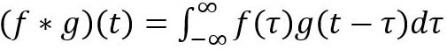
它被定义为两个函数在反转和移位后的乘积的积分。以下可视化展示了这一想法。
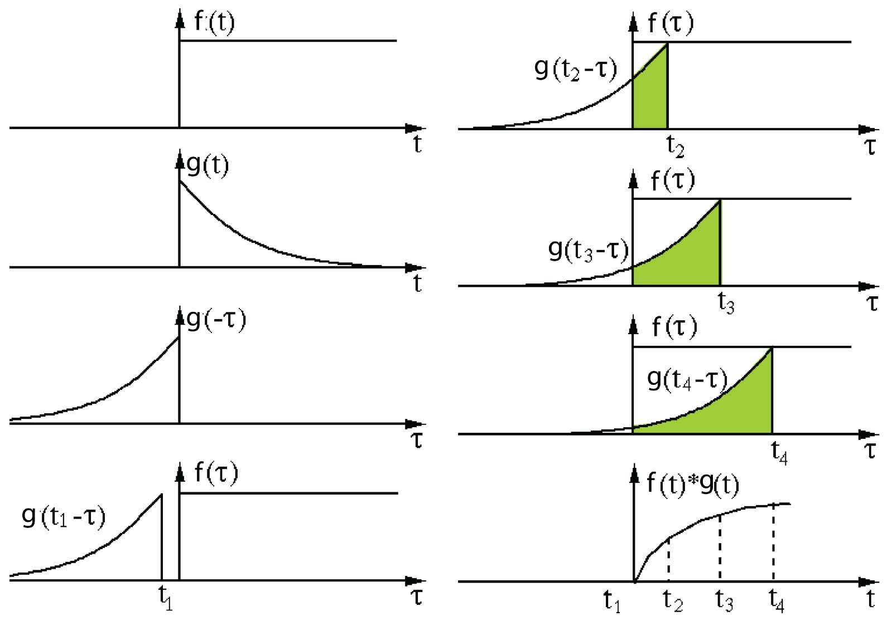
滤波器g反转，然后沿水平轴滑动。对于每个位置，我们计算f和反向g之间的交点面积。交叉区域是该特定位置的卷积值。 从该链接采用并编辑图像。
这里，函数g是滤波器(filter)。它反转，然后沿水平轴滑动。对于每个位置，我们计算f和反向g之间的交点面积。该交叉区域是该特定位置的卷积值。
另一方面，互相关被称为滑动点积或两个函数的滑动内积。互相关的滤波器不会反转。它直接滑过函数f。f和g之间的交叉区域是互相关。下图显示了卷积和互相关之间的差异。
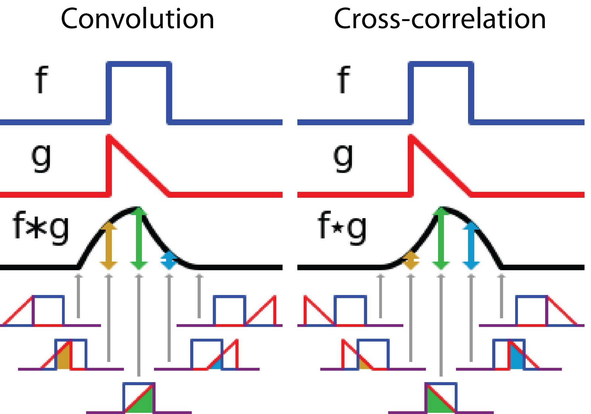
图像由维基百科采用和编辑
在深度学习中，卷积中的滤波器不会被逆转。严格来说，它是互相关操作。我们基本上执行逐元素乘法和加法。但是，在深度学习中将其称为卷积是一种惯例。这是可以的，因为在训练期间过滤器的权值是学习得到的。如果上述示例中的反转函数g是正确的函数，则在训练之后，学习的过滤器看起来就像反转函数g。因此，在训练之前不需要像真正的卷积那样反转滤波器。(补充：而数字图像处理中经常提到的一些边缘检测算子，如Canny算子，Sobel算子和Laplace算子等等，这些滤波器模板的参数是固定的，或者说是由近似一阶差分提出系数后得到的，再跟原图f(x)做卷积运算就可以检测边缘了，如下图所示为一些常用滤波器模板)
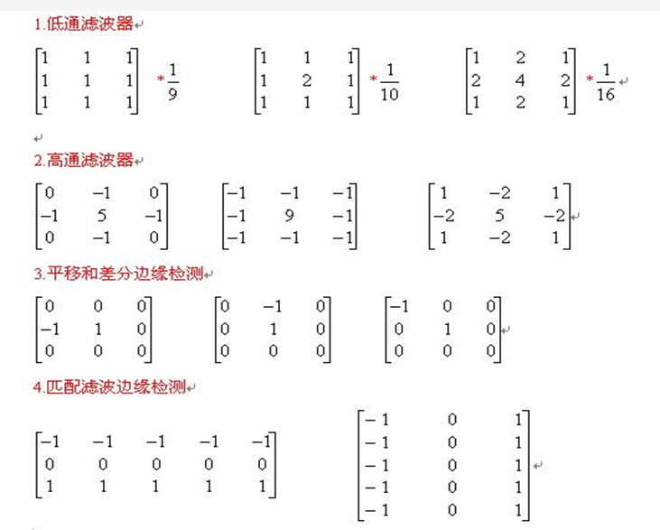
深度学习中的卷积
进行卷积的目的是从输入中提取有用的特征。在图像处理中，可以选择用于卷积的各种不同的滤波器。每种类型的滤波器都有助于从输入图像中提取不同的方面或特征，例如水平/垂直/对角线边缘。同样，在卷积神经网络中，使用滤波器通过卷积操作提取原始图像中不同的特征，而滤波器的权重在训练期间是自动学习的。然后将所有这些提取的特征“组合”以做出决策。
进行卷积有一些优点，例如权重共享和平移不变性。卷积还将像素的空间关系考虑在内。这些可能非常有用，特别是在许多计算机视觉任务中，因为这些任务通常涉及识别某些组件与其他组件具有某些空间关系的对象（例如，狗的身体通常链接到头部，四条腿和尾部）。
卷积：单通道版本
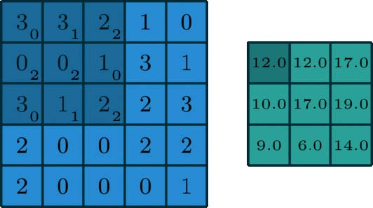
图片来源于这里
在深度学习中，卷积是元素乘法和加法。对于具有1个通道的图像，将在下面的图中演示卷积。这里的滤波器是一个3 x 3矩阵，元素[[0,1,2]，[2,2,0]，[0,1,2]]。滤波器在输入端滑动。在每个位置，它都在进行元素乘法和加法。每个滑动位置最终都有一个数字。然后，最终输出是3×3矩阵。（注意，在这个例子中，stride = 1和padding = 0。这些概念将在下面的数学基础部分中描述。
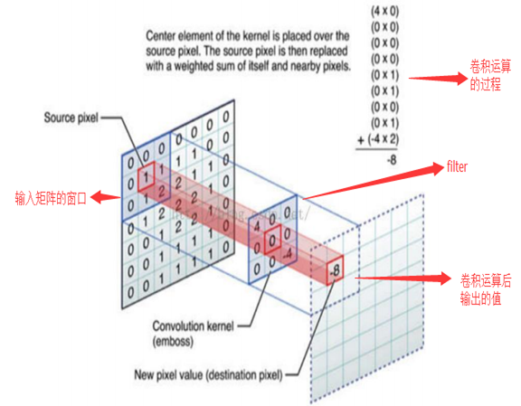
卷积：多通道版本
在许多应用程序中，我们处理的是具有多个通道的图像。典型的例子是RGB图像。每个RGB通道都强调原始图像的不同方面，如下图所示。
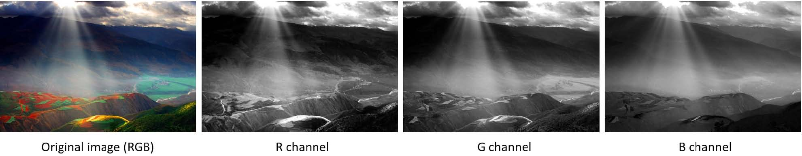
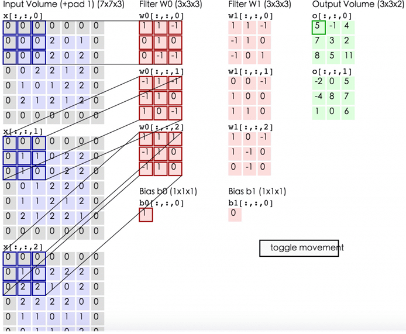
多通道数据的另一个例子是卷积神经网络中的层。卷积网络层通常由多个通道（通常为数百个通道）组成。每个通道都描述了前一层的不同方面。我们如何在具有不同深度的层之间进行过渡？我们如何将深度为n的图层转换为深度为m的后续图层？
在描述该过程之前，我们想澄清一些术语：层(layers)，通道(channels)，特征图(feature maps)，过滤器(filters)和内核(kernels)。从层次结构的角度来看，层和过滤器的概念处于同一级别，而通道和内核位于下一级。通道和特征图是一回事。图层可以有多个通道（或特征图）：如果输入是RGB图像，则输入图层有3个通道。“通道”通常用于描述“层”的结构。类似地，“内核”用于描述“过滤器”的结构。
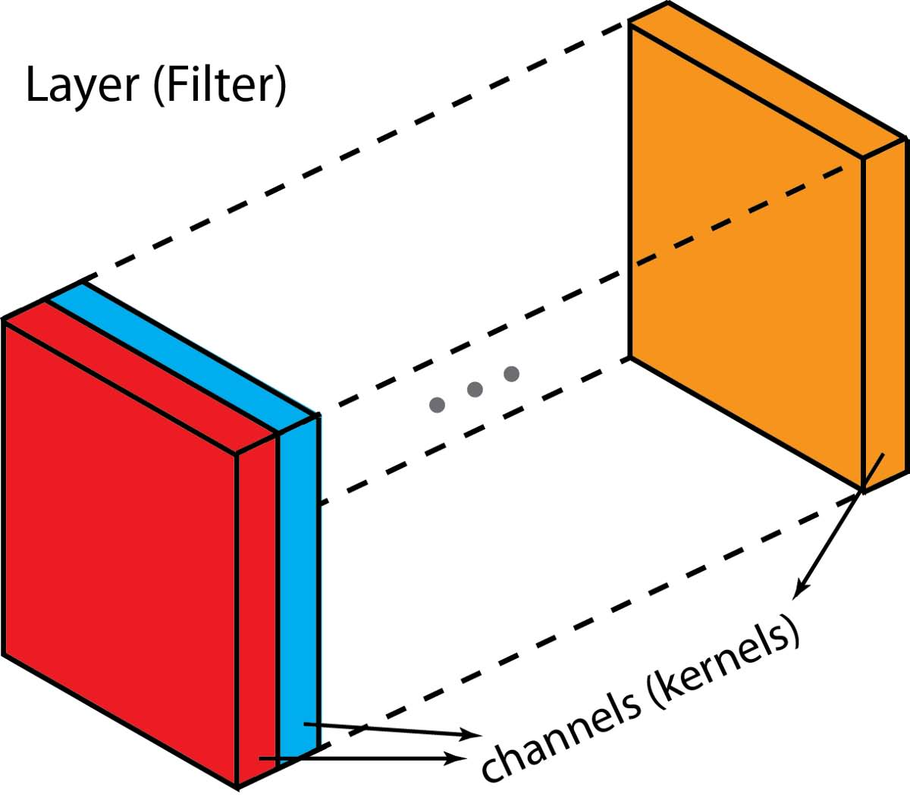
filter和kernel之间的差异有点棘手。有时，它们可以互换使用，这可能会产生混淆。从本质上讲，这两个术语具有微妙的差异。“kernel”指的是2D权重阵列。术语“filter”用于堆叠在一起的多个kernel的3D结构。对于2D filter，filter与kernel相同。但对于3D filter和深度学习中的大多数卷积，filter是kernel的集合。每个kernel都是独一无二的，强调输入通道的不同方面。
有了这些概念，多通道卷积如下。将每个kernel应用到前一层的输入通道上以生成一个输出通道。这是一个kernel-wise的过程。我们为所有kernel重复这样的过程以生成多个通道。然后将这些通道中的每一个加在一起以形成单个输出通道。下图应该使该过程更清晰。
这里输入层是一个5 x 5 x 3矩阵，有3个通道。filter是3 x 3 x 3矩阵。首先，将filter中的每个kernel分别应用于输入层中的三个通道。执行三次卷积，产生3个尺寸为3×3的通道。
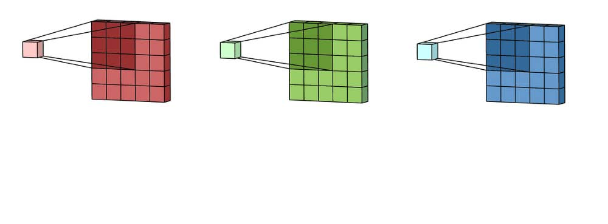
然后将这三个通道相加（元素加法）以形成一个单通道（3 x 3 x 1）。该通道是使用滤波器（3×3×3矩阵）对输入层（5×5×3矩阵）进行卷积的结果。
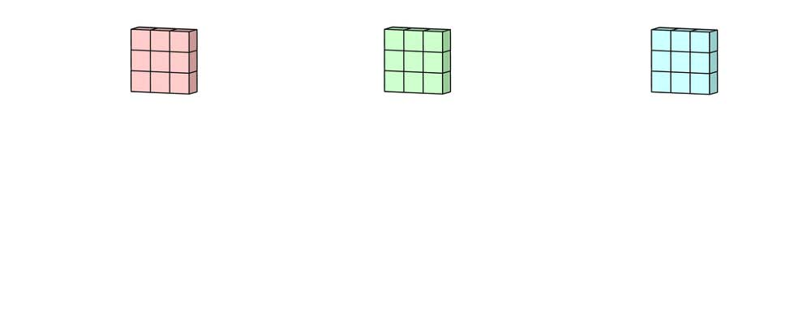
同样，我们可以将此过程视为通过输入层滑动3D滤波器矩阵。请注意，输入层和filter具有相同的深度（channel数=kernel数）。3D filter仅在图像的2个方向:高度和宽度上移动（这就是为什么这种操作被称为2D卷积，尽管3D filter用于处理3D体数据）。在每个滑动位置，我们执行逐元素乘法和加法，这导致生成单个数字。在下面所示的示例中，滑动在水平5个位置和垂直5个位置执行。总的来说，我们得到一个单一输出通道。
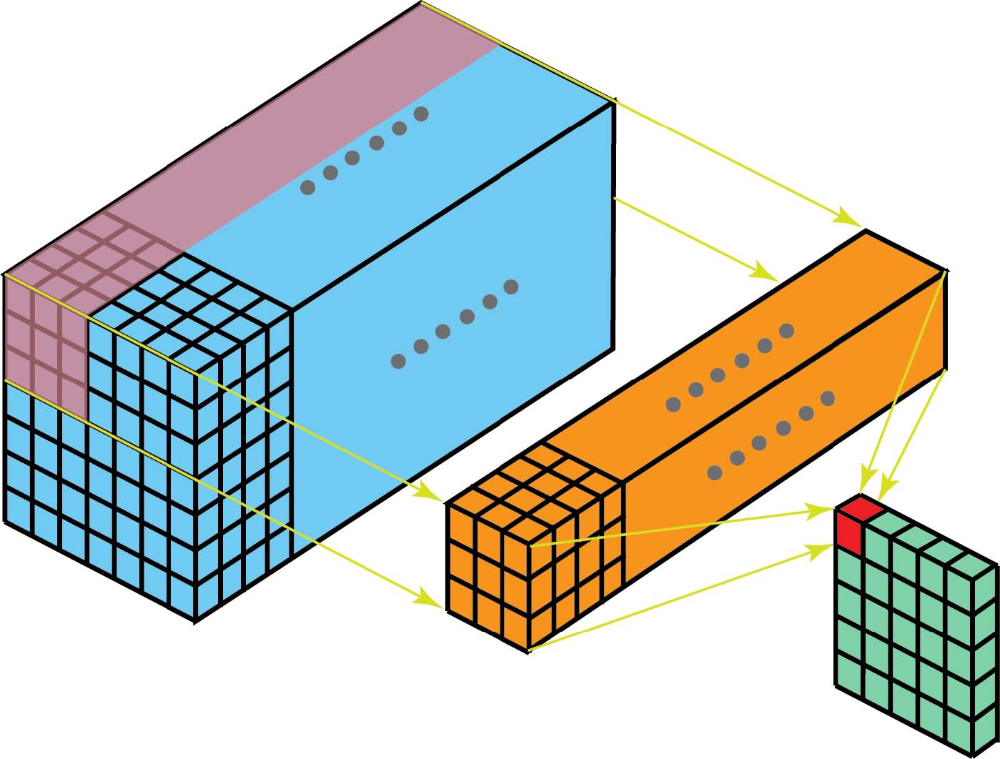
现在我们可以看到如何在不同深度的层之间进行过渡。假设输入层有Din通道，我们希望输出层有Dout通道。我们需要做的是将Dout filters应用于输入层。每个滤波器都有Din kernels。每个filter提供一个输出通道。应用Dout filters后，我们有Dout通道，然后可以将它们堆叠在一起形成输出层。
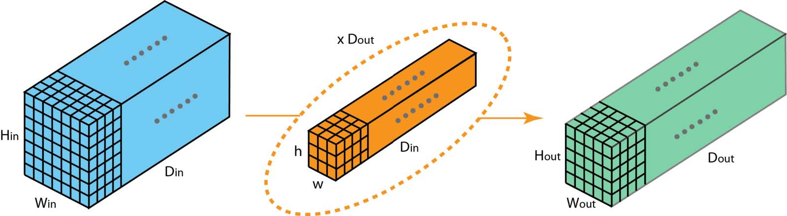
3D卷积
在上一节的最后一个插图中，我们看到我们实际上是对3D volume执行卷积。但通常情况下，我们仍将该操作称为深度学习中的2D卷积。这是3D体数据的2D卷积。滤波器深度与输入层深度相同。3D filter仅在双向（图像的高度和宽度）上移动。此类操作的输出是2D图像（仅限1个通道）。
当然，有三维卷积。它们是2D卷积的推广。这里在3D卷积中，滤波器深度小于输入层深度（kernel大小<channel大小）。结果，3D filter可以在所有3个方向（图像的高度，宽度，通道）上移动。在每个位置，逐元素乘法和加法生成一个数字。由于过滤器滑过3D空间，输出数字也排列在3D空间中。然后输出是3D数据。
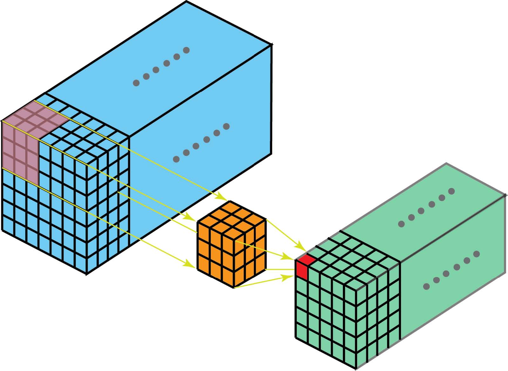
类似于编码2D域中对象的空间关系的2D卷积，3D卷积可以描述3D空间中的对象的空间关系。这种3D关系对于一些应用是重要的，例如在生物医学图像的3D分割/重建中，例如CT和MRI，其中诸如血管的对象在3D空间中蜿蜒。
1*1卷积
由于我们在前面的3D卷积部分讨论了深度操作，让我们看看另一个有趣的操作，即1 x 1卷积。
您可能想知道为什么这有用。我们只是将一个数字乘以输入层中的每个数字吗？是和否。对于只有一个通道的图层，操作非常简单，我们将每个元素乘以一个数字即可。
如果输入层有多个通道，事情会变得很有趣。下图说明了1 x 1卷积如何适用于尺寸为H x W x D的输入层。在1 x 1卷积后，滤波器尺寸为1 x 1 x D，输出通道的尺寸为H x W x 1.如果我们应用N这样的1 x 1卷积然后将结果连接在一起，我们可以得到一个尺寸为H x W x N的输出层。
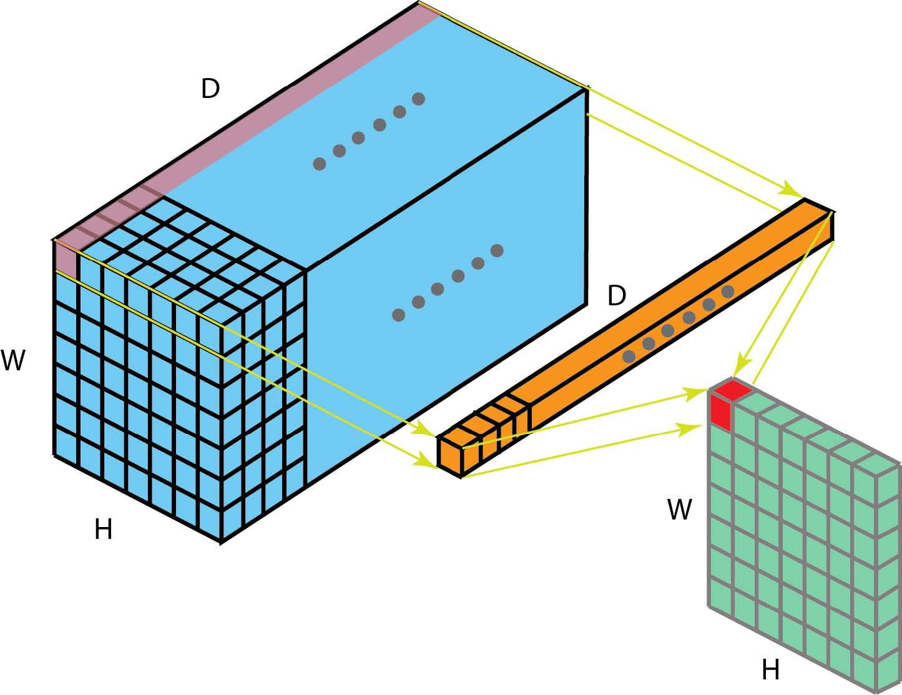
最初，在Network-in-Network论文中提出了1 x 1卷积。然后，它们在Google Ineption系列论文中被高度使用。1 x 1卷积的一些优点是：
- 维度缩减后的计算有效性
- 有效的低维嵌入或特征池化
- 卷积后再次应用非线性
在上图中可以观察到前两个优点。在1 x 1卷积之后，我们显著地减小了尺寸。假设原始输入有200个通道，1 x 1卷积会将这些通道（特征）嵌入到单个通道中。第三个优点是在1 x 1卷积之后，可以添加诸如ReLU的非线性激活。非线性允许网络学习更复杂的功能。
这些优势在Google的Inceptionx系列论文中描述为：
“上述模块的一个大问题，至少在这种朴素的形式下，即使是一个合适数量的5x5卷积，在具有大量filters的卷积层之上也会非常昂贵。这导致了提出的架构中的第二个想法：明智地应用尺寸减小和投影，否则计算要求会增加太多。 这是基于嵌入的成功：即使是低维嵌入也可能包含大量关于相对较大图像补丁的信息。也就是说，在昂贵的3 x3和5 x 5卷积之前，使用1 x 1卷积来减少计算量。 除了用作缩减之外，它们还包括使用整流线性激活(RELU)，这使得它们具有双重用途.”
关于1 x 1卷积的一个有趣的观点来自Yann LeCun“在卷积网络中，没有”完全连接层“这样的东西。只有1x1卷积kernels和一个完整连接表的卷积层。”
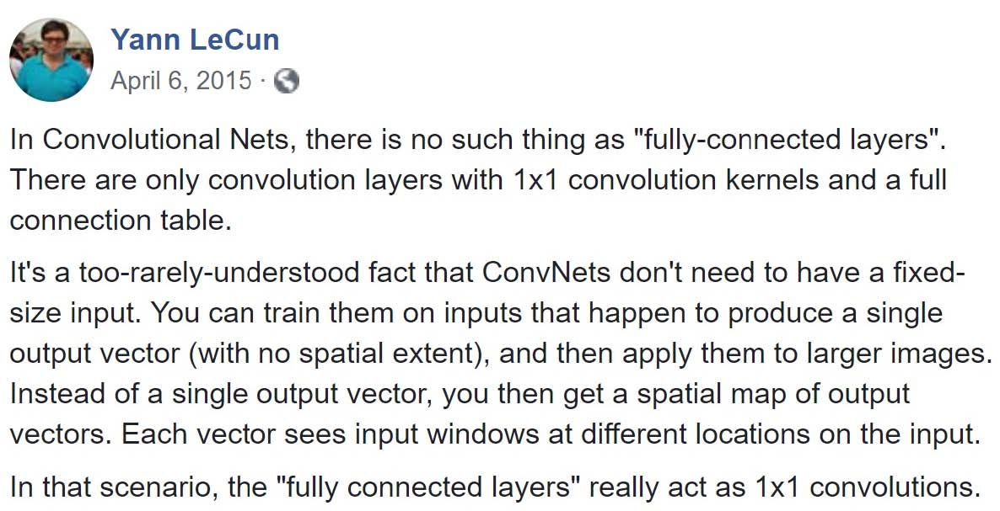
卷积数学基础
我们现在知道如何处理卷积的深度。让我们继续讨论如何处理其他两个方向（高度和宽度）的卷积，以及重要的卷积算法。
以下是一些术语：
- kernel大小：kernel已在上一节中讨论。内核大小决定了卷积的视野。
- 步幅(stride): 当滑过图像时，它会确定内核的步长。步幅为1意味着内核逐像素地滑过图像。步幅为2意味着内核通过每步移动2个像素（即跳过1个像素）滑过图像。我们可以使用步幅（> = 2）对图像进行下采样。
- 卷积后再次应用非线性
下图描述了使用内核大小为3，步幅为1和填充为1的2D卷积。
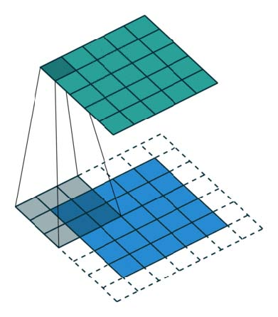
有一篇关于详细算术的优秀文章《A guide to convolution arithmetic for deep learning》,可以参考它来获得内核大小，步幅和填充的不同组合的详细描述和示例。在这里，我只是总结一般案例的结果。
对于大小为i，内核大小为k，p的填充和s的步幅的输入图像，来自卷积的输出图像具有大小o：
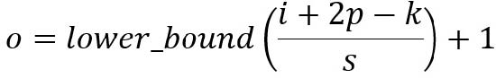
中篇待续…